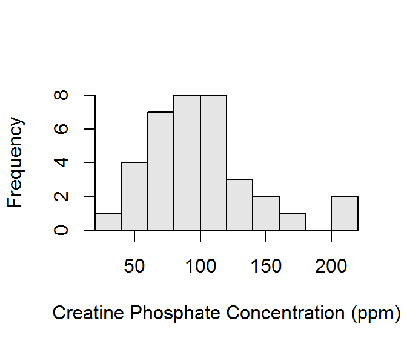
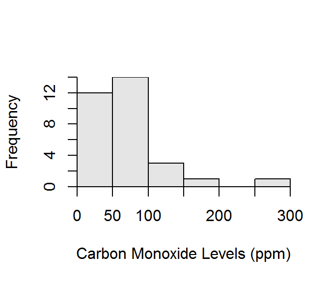

The histogram is in Figure 1.

Figure 1: Histogram of the creatine phosphokinase concentrations in 36 male volunteers.
library(NCStats)
df <- read.csv("data/CreatinePhosphate.csv")
hist(~cp,data=df,xlab="Creatine Phosphate Concentration (ppm)")The histogram is in Figure 2.

Figure 2: Histogram of the carbon monoxide levels arising from the oil refinery stack.
library(NCStats)
df <- read.csv("data/Polln.csv")
hist(~polln,data=df,xlab="Carbon Monoxide Levels (ppm))